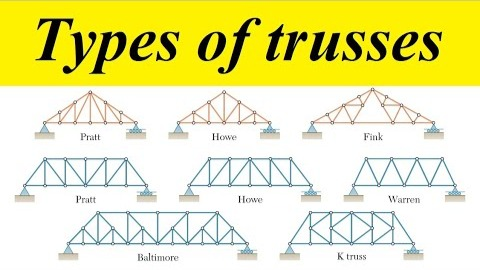
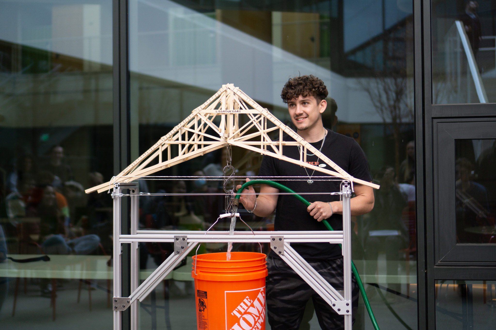

Gallery
IMAGES


Warren truss bridge lifting ~250lbs — nearly 20× its own weight. FEA-optimised in ANSYS, fabricated to sub-1mm tolerances. Failed at adhesive joints, not the structure.

ES120 (Structural Mechanics) is Harvard's civil engineering fundamentals course. The final project challenged students to design and build a lightweight balsa wood bridge capable of supporting maximum load relative to its own weight. Our bridge lifted approximately 250lbs — nearly 20 times its own weight. The bridge failed at the glue joints; Professor Vlassak noted that had the adhesive held, it would have been capable of lifting significantly more.
Employed Warren truss geometry — a triangulated arrangement of diagonal members — selected because it distributes load so that each member carries primarily axial force (tension or compression) rather than bending, making efficient use of balsa wood's high strength along the grain. Members were oriented so grain direction aligned with the primary load axis. Reinforcements added only at joints predicted by FEA to see the highest stress concentrations, avoiding unnecessary weight additions elsewhere.
Finite element analysis in ANSYS was used to model the full truss under applied loading, generating stress and deflection distributions across every member. This allowed the design to be iterated computationally before fabrication — cross-sections adjusted, members added or removed, and reinforcement positions refined based on stress concentrations. The model identified glue joints at the most heavily loaded nodes as the critical failure point — a prediction confirmed when the bridge failed there during load testing.
Methodical assembly: each member cut to length, grain direction verified, dry-fitted before any adhesive was applied. Glue quantities carefully controlled — too little produced a weak joint, too much added weight without proportional strength gain. Dimensional tolerances held under 1mm throughout. The bridge failed at adhesive joints rather than within the balsa members — structural design had significant headroom beyond the recorded failure load.
Gallery

Links